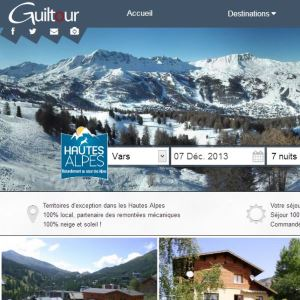
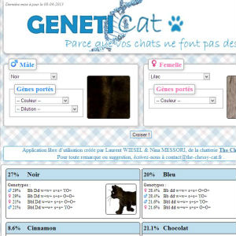
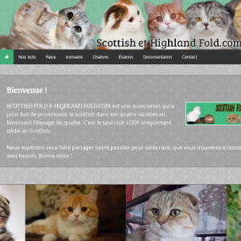
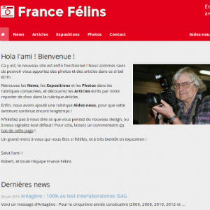

Développement web en régie et en agence, principalement en Symfony pour la partie backend.
Initialisation du fonctionnement agence en tant que chef de projet, sur des projets de plus de 50 jours.
Le fonctionnement en auto-entrepreneur en complément d'activité me permet d'améliorer constamment mon code et ma gestion de projet. C'est pour moi un élément crucial de mon expérience.
Gestion de projet de A à Z
Gestion complète de clientèle
Création from scratch d'architectures
Projets effectués sur base Agile
Symfony 2.xPhp 5.4+MySqlSass/LessGitJavascript
GanttAgile
Sopra Group
Analyste Développeur
Multiples missions allant de l'expertise fonctionnelle (Région Rhône-Alpes) au développement en TMA (CAF).
Développement client lourd avec contraintes qualité fortes
Mise en place de workflow et frameworks de tests type XUnit
Expertise applicative en relation directe avec le client
OpenEdgeAgile
Rhodia Engineering Plastics
Analyste marché - New Product Division
Projet de Fin d'Etude visant à déterminer les opportunités de marché pour imprimantes 3D, dans le but de développer des matériaux plastiques adéquats.
Etude marketing sur marchés nouveaux
Analyse stratégique de partenariats
Analyse de tendances par webscraping
Réalisations notables
Personnelles
Guiltour - Design d'une centrale de réservation de séjours de ski
En attente de mise en production
Design 100% responsive, navigation spécifique pour mobiles, éléments adaptés au supports tactiles et structure interne hautement modulable et évolutive, grâce à un fonctionnement par modules.

GenetiCat - Conception & Design d'une application de génétique statistique
Application de calcul de génétique statistique. Le temps de réponse de l'application devait être le plus petit possible, malgré la très grande quantité de données manipulée et la complexité des calculs.

Scottish Fold & Highland Fold - Conception & Design d'un site pour un club de race de chat
Fait en Symfony 2, avec un design responsive et modulaire. Un espace membre est disponible avec paiement en ligne, et l'administration permet la gestion administrative et comptable de l'association.

France Félins - Conception & Design d'un site de photos et d'articles liés au milieu félin
Refonte du site pour mettre en valeur les contenus exclusifs du site, et pour passer en responsive. Comporte une administration personnalisée, un système custom de gestion de publicités et un système de dons.

Open-source
FadeThis - A lightweight jQuery plugin for fade-as-you-scroll features.
Composant server PHP proposant la détection du format, de la résolution et de la bande passante du device client pour servir une image de qualité adaptée.
Architecture CSS ultra modulaire basée sur le langage Sass, s'inspirant de la nomenclature BEM et des principes d'OOCSS (Nicole Sullivan) et de l'Atomic Design (Brad Frost).
La formation MANINTEC est proposée au semestre 5 de la formation d'ingénieur. Elle permet d'acquérir la double compétence ingénieur-manager dans le domaine de l'innovation technologique.
Stratégie d'entreprise
Méthodes de créativité
Marketing de l'innovation
Gestion de projet
Propriété intellectuelle
Conception orientée utilisateur
Sociologie de l'innovation
PHELMA
Ecole d'ingénieur généraliste du groupe Grenoble-INP
Formation en Physique, Electronique et Matériaux, spécialisation en Biomedical Engineering.
Phelma est une école d'ingénieur très implantée dans le bassin industriel grenoblois, ainsi que dans le milieu de la recherche, grâce au pôle de compétences Minatec.